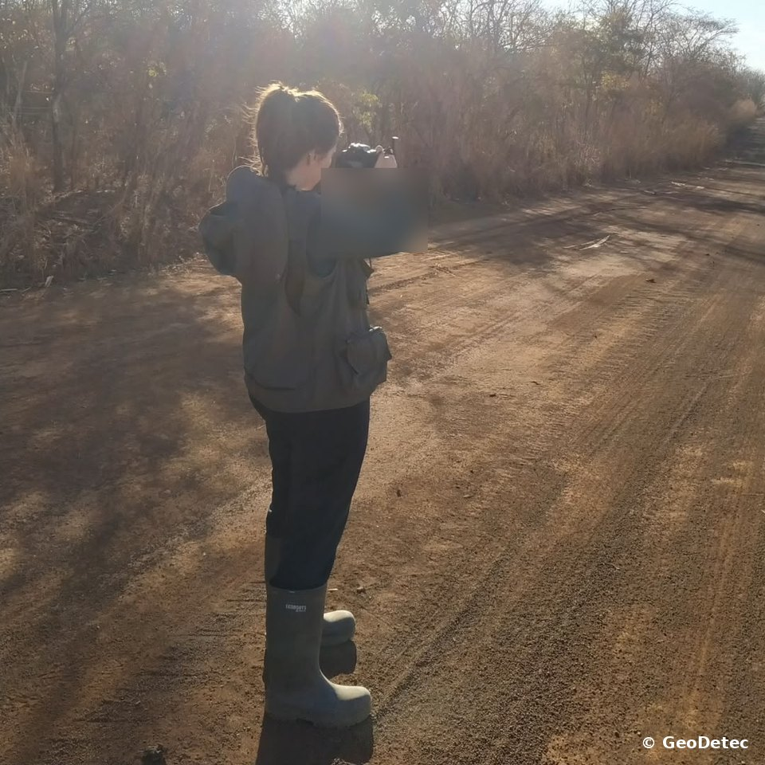
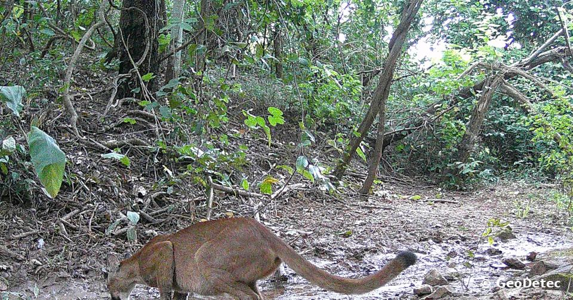
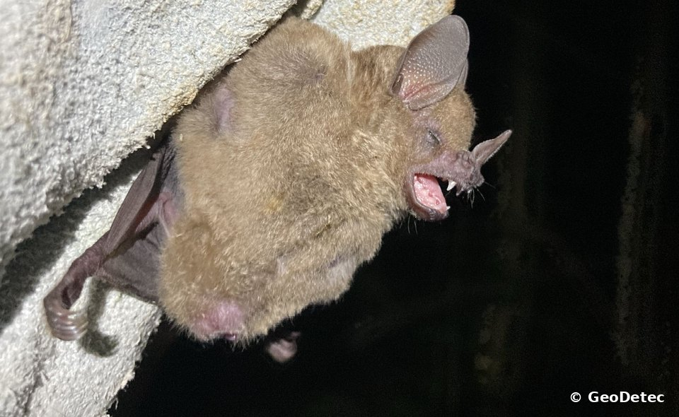
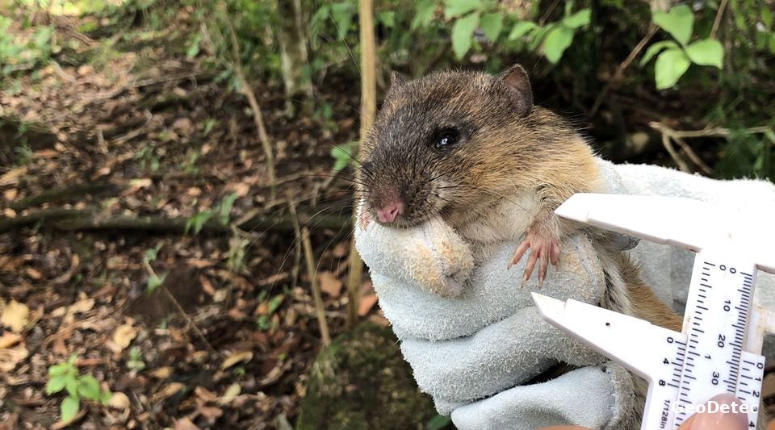
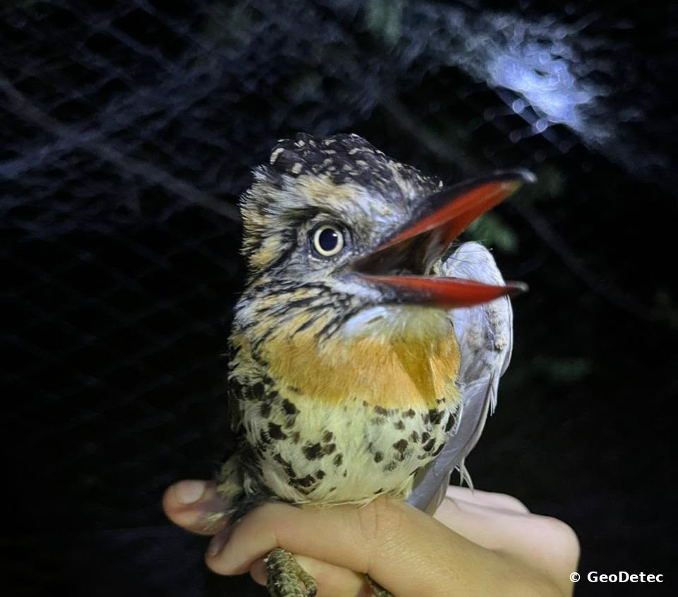
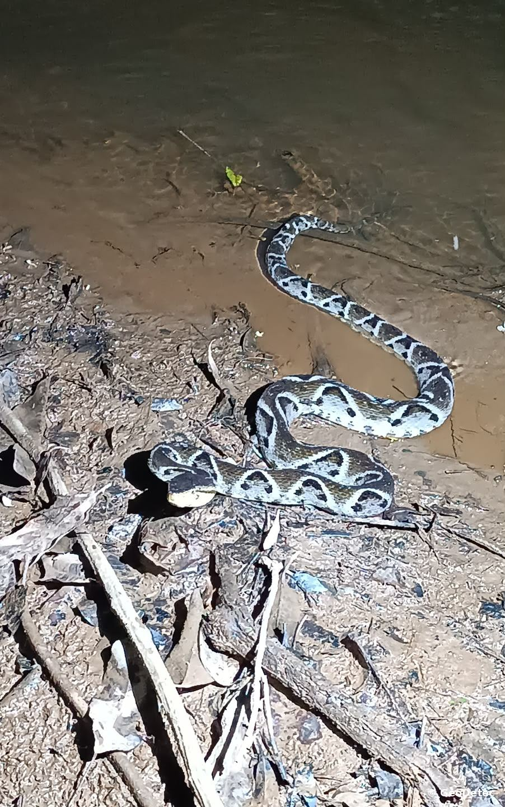
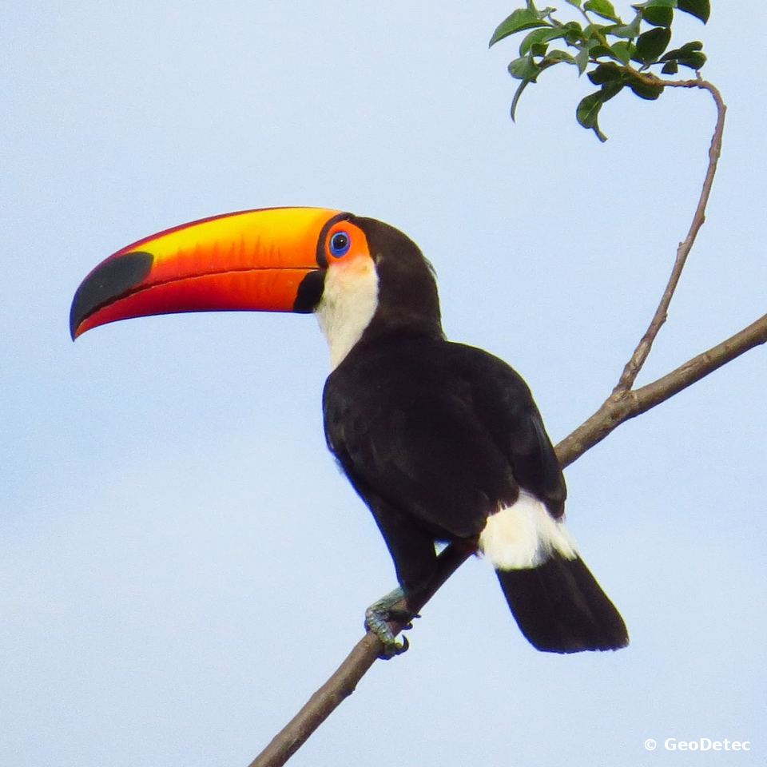

Fauna e flora
Estudos de fauna
Levantamento, diagnóstico e monitoramento de fauna por equipe própria de biólogos, do campo ao relatório.
O que é
Nossa equipe de biólogos faz as campanhas de campo, identifica as espécies, avalia o status de conservação e escreve os relatórios para o licenciamento — com dados primários (campo) e secundários (literatura e bases oficiais). Quando o projeto pede, somamos especialistas parceiros.
Grupos estudados
- Mastofauna (mamíferos terrestres)
- Quiropterofauna (morcegos)
- Ictiofauna (peixes)
- Herpetofauna (anfíbios e répteis)
- Avifauna (aves)
- Entomofauna vetora
Estrutura e diferenciais
- Campanhas em fins de semana e feriados, quando o projeto pede.
- Equipamentos próprios para os levantamentos.
- Acervo técnico para identificação de mamíferos e morcegos.
- Atendimento em diferentes municípios de Goiás.
Em campo







Quando é exigido
- Estudos ambientais para licenciamento (diagnóstico de fauna).
- Barramentos e canais de irrigação (ictiofauna e entomofauna vetora).
- Supressão de vegetação com resgate e salvamento de fauna.
- Condicionantes de monitoramento de fauna.
O que entregamos
- Campanhas de levantamento e monitoramento.
- Identificação taxonômica e avaliação do status de conservação.
- Relatórios de diagnóstico de fauna silvestre.
- Relatórios de resgate e salvamento de fauna.
- Pedido e acompanhamento de autorização de manejo de fauna no Sistema Ipê (SEMAD-GO).
Documentos que você envia
- Termo de Referência ou exigência do órgão ambiental.
- Limites da área de estudo (KML, SHP).
- Cronograma do empreendimento.
Normas de referência
- Lei 5.197/1967 (Proteção à Fauna)
- Instrução Normativa IBAMA 146/2007 (referência para manejo de fauna em licenciamento)
- Portaria MMA 148/2022 (espécies ameaçadas)
- Normas da SEMAD-GO para autorização de manejo de fauna